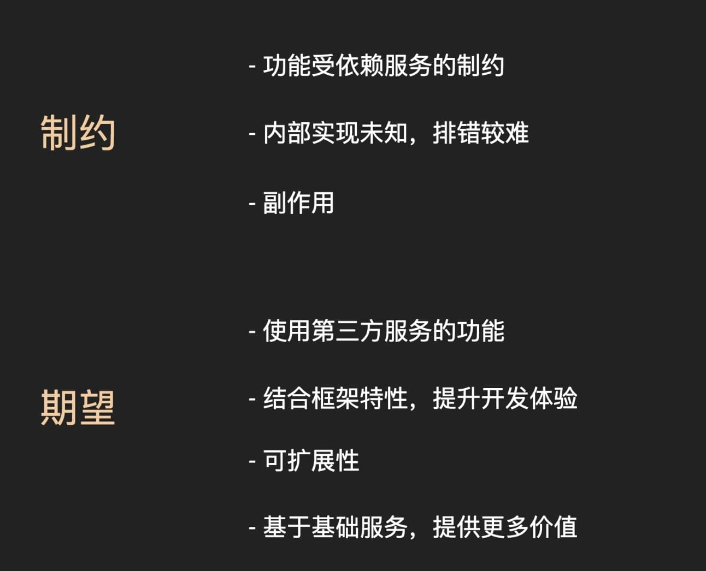

<div ref="streamContainer" class="stream-container">
    <div class="post-list-container post-list-container-shadow">
        <div class="post">
            <div class="post-head-wrapper"
                 style="background-image: url('/2017/11/05/参加2017饿了么大前端秋季交流会/logo.png')">
                <div class="post-title">
                    参加 2017 饿了么大前端秋季交流会
                    <div class="post-meta">
                        <time datetime="2017-11-05T18:09:44.000Z" itemprop="datePublished">
                            2017-11-05 18:09
                        </time>&nbsp;
                        
                        
                        <i class="material-icons" style="">folder</i>
                        
                        <a href='/categories/JavaScript/'>JavaScript</a>
                        
                        
    
                        
                        
                        <i class="material-icons" style="">label</i>
                        
                        <a href='/tags/JavaScript/'>JavaScript</a>
                        
                        
                    </div>
                </div>
            </div>
    
            <div class="post-body-wrapper">
                <div class="post-body">
                    <!-- no node -->

<span id="more"></span>

<blockquote>
<p>2017.11.04<br>in Shanghai<br>饿了么总部</p>
</blockquote>
<h3 id="《H5-埋雷指南》-——-向勇"><a href="#《H5-埋雷指南》-——-向勇" class="headerlink" title="《H5 埋雷指南》 —— 向勇"></a>《H5 埋雷指南》 —— 向勇</h3><p>在移动端H5开发过程中，我们经常会用一些常见的手段去解决性能问题，比如将小图片编译成BASE64、通过Hash值控制版本、资源缓存本地、拆分基础及业务层代码等等减少HTTP请求的优化手段，但是这些是从<strong>加载性能</strong>（Loading performance）的角度去优化。</p>
<p>从而我们忽视了如何从<strong>渲染性能</strong>（Rendering performance）的角度去优化代码。那么我们需要去关注一些样式对层的提升从而使用3D加速（我理解为GPU加速）去提升页面渲染，但是这一类样式特性并不能滥用，考虑到用户设备配置过低，效果其实并不理想，所以使用的地方需要权衡，不然就是给同事埋“雷”啦 :)</p>
<p><strong>那么如何用Chrome去观察页面渲染呢？</strong><br>-&gt; Rendering [x] Layer borders<br>-&gt; Layers</p>
<hr>
<p><strong>讲师分享的一些技巧和值得注意的“雷”</strong></p>
<ul>
<li><code>transform</code></li>
<li><code>will-change</code></li>
<li><code>backface-visibility: hidden</code></li>
<li><code>position: fixed</code></li>
<li><code>z-index</code></li>
<li><a target="_blank" rel="noopener" href="http://www.aoao.org.cn/blog/2010/03/rmb/">￥和<code>&amp;yen;</code></a></li>
<li><code>&lt;sticky&gt;</code>和浮点数</li>
<li>安卓文字小图片</li>
<li>vue-img基于<code>dpr</code>动态裁剪</li>
<li>隐含的全局变量导致移除的节点无法GC</li>
</ul>
<p><strong>Rendering顺序</strong></p>
<p>JavaScript -&gt; Style -&gt; Layout -&gt; Paint -&gt; Composite</p>
<p><strong>那么通过一些样式技巧将Rendering顺序优化为：</strong></p>
<p>JavaScript -&gt; Style -&gt; Composite</p>
<h3 id="《前端数据可视化实践浅析》-——-邵丁丁"><a href="#《前端数据可视化实践浅析》-——-邵丁丁" class="headerlink" title="《前端数据可视化实践浅析》 —— 邵丁丁"></a>《前端数据可视化实践浅析》 —— 邵丁丁</h3><p>感受了可视化从古至今的演变过程，为之震撼，理解为可视化的目标就是为了让人更直观的获取数据和信息，并与其进行交互。</p>
<p>那么在做可视化之前需要对数据转标准化，将一些非标的数据进行标准化处理，因为之前在浙商银行从事过产品经理相关的工作内容，所以我认为这更像是数据分析的前提工作，数据滤波、降维、采样、聚类、剖分、配准、转换，最后再呈现给用户。</p>
<p>至于在前端实现可视化内容，目前成熟的轮子还是比较多的。</p>
<h3 id="《浅谈第三方服务与-Vue-的结合》-——-喻争"><a href="#《浅谈第三方服务与-Vue-的结合》-——-喻争" class="headerlink" title="《浅谈第三方服务与 Vue 的结合》 —— 喻争"></a>《浅谈第三方服务与 Vue 的结合》 —— 喻争</h3><blockquote>
<p>很巧，刚好我用过Vue-AMap，关于使用Vue-AMap和我实践ES6的总结我将放在下次。</p>
</blockquote>
<p>那么架桥梁的目的和在架桥梁的时候存在的问题：</p>
<p></p>
<p>在架桥梁的时候需要注意什么点呢？</p>
<ul>
<li>如何随同第三方服务迭代而迭代？</li>
<li>提供第三方服务Plus功能</li>
<li>寻找第三方服务API特征规律</li>
<li>保证用户能够使用第三方服务的所有功能 （直接暴露第三方对象 哈哈……）</li>
<li>巧用Mixin</li>
</ul>
<h3 id="《H5-页面可视化编辑系统的实践》-——-林溪"><a href="#《H5-页面可视化编辑系统的实践》-——-林溪" class="headerlink" title="《H5 页面可视化编辑系统的实践》 —— 林溪"></a>《H5 页面可视化编辑系统的实践》 —— 林溪</h3><p>H5活动页面快速生成工具？应该是这样吧，让我后面再悟一悟</p>
<h3 id="《浅析-ElementUI-中-Table-的设计实现》-——-苏再华"><a href="#《浅析-ElementUI-中-Table-的设计实现》-——-苏再华" class="headerlink" title="《浅析 ElementUI 中 Table 的设计实现》 —— 苏再华"></a>《浅析 ElementUI 中 Table 的设计实现》 —— 苏再华</h3><p><strong>我就记得很优雅</strong></p>
<p>对了，还有就是跟浏览器的滚动条对着干，嗯…… 是这么个节奏</p>
<p>总之，分享了很多在Table开发过程中的深坑，实在回想不起来了……</p>
<p>我一定会去读源码的 ;)</p>
<h3 id="《从用户体验角度看需求的始终》-——-薛丽丽"><a href="#《从用户体验角度看需求的始终》-——-薛丽丽" class="headerlink" title="《从用户体验角度看需求的始终》 —— 薛丽丽"></a>《从用户体验角度看需求的始终》 —— 薛丽丽</h3><p>在公司中如何让前端具有主导地位，那么就是不要局限于前端领域，有空多去看看周边领域，一样很有趣喔~</p>
<p>同样，在看到事物的时候多想想为什么要这样做？</p>
<p>从用户角度去考虑问题，把最简单的呈现给用户，复杂的我们自己消化掉。</p>
<p>这让我想到，我的老东家，银行里面有很多奇奇怪怪的专业词汇其实用户根本看不懂，只有从事金融领域的同事才能看懂其实，那些专业词汇其实都是经验丰富的大佬提出的，但是没有做好用户体验，现在社会人人都能撸出一个差不多的产品，竞争点其实都在用户体验。</p>
<p>前端，其实不止撸代码、同样要考虑到交互、用户体验等等问题，目的就是把产品做到极致。</p>
<p>最后记住那51把刀，哈哈！</p>
<h3 id="《Vue-amp-TypeScript-实战指北》-——-袁德鑫"><a href="#《Vue-amp-TypeScript-实战指北》-——-袁德鑫" class="headerlink" title="《Vue &amp; TypeScript 实战指北》 —— 袁德鑫"></a>《Vue &amp; TypeScript 实战指北》 —— 袁德鑫</h3><p><a target="_blank" rel="noopener" href="https://github.com/Microsoft/TypeScript">TypeScript</a></p>
<ul>
<li>语言类型向强类型语言靠拢，编译阶段发现问题，避免把问题带上生产</li>
<li>Coding过程可以更方便的使用ES6, ES7</li>
</ul>
<p>值得我去学习了解更多。</p>
<h3 id="《Node-js-之-Serverless-简介》-——-黄鼎恒"><a href="#《Node-js-之-Serverless-简介》-——-黄鼎恒" class="headerlink" title="《Node.js 之 Serverless 简介》 —— 黄鼎恒"></a>《Node.js 之 Serverless 简介》 —— 黄鼎恒</h3><ul>
<li>取代运维？</li>
<li>生产上直接改代码？</li>
</ul>
<p>挺牛逼的，同样也扩大了眼界。</p>
<hr>
<p>真的是干货满满！收货很大！</p>
<p>最后<strong>可乐</strong>加<strong>需求不接</strong>！</p>
<p></p>
<hr>
<p>感谢<a target="_blank" rel="noopener" href="https://github.com/ElemeFE">@饿了么前端</a><br><a target="_blank" rel="noopener" href="https://www.zhihu.com/question/66773406">知乎</a></p>

                </div>
            </div>

            
            
            
    
            
    
            
        </div>
    </div>
    
</div>


